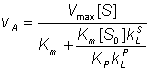

|
|
Effects of solute diffusion on the kinetics of immobilised enzymesIn order for an immobilised enzyme to catalyse a reaction, the substrates must be able to diffuse through the solution to the catalytically active sites and the products diffuse away into the bulk solution. The driving force for the net diffusive process is due to the concentration gradients, solutes moving in the direction of higher to lower concentration. The substrates approach the surface of the enzyme particles through the surrounding thin stagnant unstirred layer of solution and then diffuse into any pores where they may encounter active enzyme. The net movement of the solutes is described in terms of these two steps;
The concentration gradients caused by diffusion and partition are shown diagrammatically in Figure 3.10. The rate of a reaction catalysed by an immobilised enzyme (v) is normally lower than the rate due to the same amount of free enzyme in solution (vfree). This is due to the controlling necessity for the substrate to diffuse from the bulk phase to the catalytic surface. The substrate concentration within the microenvironment ([S]) is lower than that in the bulk ([S0]) due to its depletion by the reaction. The change in reaction rate can be expressed quantitatively by introducing the effectiveness factor (h), where: h= v/vfree (3.9) The effectiveness factor generally lies between 0 and 1 and is dependent on the bulk substrate concentration, amongst other factors (see later). It may sometimes be greater than unity due to non-isothermal operation, because of partition or inhibitory effects, or if the immobilised enzyme is stabilised relative to the free enzyme over the time course of its assay. Figure 3.10. Schematic diagram showing the concentration gradients of substrate and product that may be produced around a porous particle of an immobilised enzyme. (a) concentration gradient due solely to reaction and internal diffusion within the particle; (b) as (a) but with additional concentration gradients due to partition of substrate and product into the microenvironment; (c) as (a) but with an additional concentration gradients due to external diffusion to the surface of the particle; (d) concentration gradients due to the combined effects of partition and diffusion. The partition boundary layer is normally about a thousand-fold thinner than the diffusive boundary layer. The actual concentration gradients will not show the sharp discontinuities which are shown here for simplicity. The effect of external diffusion on the rate of an enzyme catalysed reaction may be simply derived, assuming (1) Michaelis-Menten kinetics, (2) the enzyme is immobilised to a flat impervious support, and (3) the absence of any partitioning or electrostatic effects. If the reaction is occurring under steady state conditions, the rate of increase of product within the bulk of the solution must equal the rates of three consecutive processes; the rate at which substrate diffuses to the surface, the rate of enzymic catalysis, and the rate at which the product diffuses away from the surface. The steady state assumption is generally valid if the volume of the bulk of the solution is sufficiently large such that the variation in [S0] with time may be ignored. Immobilised enzymes are open systems, where both energy and material are exchanged through the boundary with the environment. This allows steady state operation even at very high enzyme loading. In any circumstances, it is clear that the substrate concentration at the catalytic surface cannot continuously increase or decrease at a substantial rate compared with the rate of reaction. Therefore, from equation 1.8, where A is the total surface area and Vmax is the maximum rate of reaction catalysed by unit area of surface. Combining equations 1.8 and 3.10 gives, As e varies with [S0], the immobilised enzyme will no longer show hyperbolic kinetics. Eadie-Hofstee plots (see Figure 3.18) derived from the relationship 3.11 are not linear because they obey the transformation equation,
As this also involves a term in e which varies, equalling unity when v equals Vmax at the intercept with the vertical v axis but which may be much lower when v is much less than Vmax at the intercept with the horizontal v/[S0] axis. Assuming that all of the surface is equally accessible, the rate of flow of substrate to the surface has been found to be proportional both to the surface area and the difference in substrate concentration between the bulk of the solution and the microenvironment next to the surface. It is given by the relationship, The proportionality constant (kL) is known as the (local liquid phase) mass transfer coefficient (with units of m s−1) which depends upon the diffusivity of the substrate and the effective distance between the surface and the bulk phase. (3.14) where DS is the substrate diffusivity (diffusion coefficient) in free solution (with units of m2 s−1) and d is the effective thickness of the unstirred layer through which the substrate must diffuse. The diffusivity is defined by Fick's law as the rate at which unit mass of the compound (m) travels through a unit surface area (A) due to a concentration gradient of unit density (r) change. (3.15) depends upon the molecular weight and dimensions of the substrate, and the temperature, viscosity and composition of the liquid phase (Table 3.6). In general terms, the higher the molecular weight and the solution viscosity, the lower will be the diffusivity. d may be effectively regarded as a distance although it is not precisely defined by the thickness of the unstirred stagnant layer as liquid motion may be detectable at distances less than d from the surface. Under stagnant flow conditions d is equal to the particle radius for spherical particles. It depends on the hydrodynamic conditions, being reduced by increases in the rate of stirring and consequent increasing particle-fluid relative velocity.; this reduction in d causing an increase in the mass transfer coefficient (kL). For example, using particles of 400 mm diameter, d has been found to be 5 mm when used in a packed bed reactor (see Chapter 5) at a reactant stream flow rate of 1 m s−1. Dependent upon the conditions, d also may vary with the diffusivity, and the density and viscosity of the liquid; increasing with increasing diffusivity and viscosity but reducing with increasing density difference between the immobilised biocatalyst and the medium. It may be halved by the use of ultrasound, which may be particularly useful for larger particles. For the small biocatalytic particles normally used, the maximum reduction in d that is achievable by increasing the turbulence of the solution around the immobilised enzyme is about ten fold. The rate of diffusion is significantly affected where partitioning occurs. For charged molecules, this will depend on the electrostatic potential gradient in addition to the concentration gradient. The electrostatic potential gradient causes apparent changes in both d and DS within the immediate vicinity of the surface (i.e., at distances very much smaller than d). This may be particularly relevant in the case of hydrogen ion diffusion (see later) as hydrogen ions move rapidly through solutions across electrostatic gradients due to their ability to rapidly change their association with water molecules. Table 3.6 Diffusivity of molecules in aqueous solution at 20°C
Due to the consecutive nature of the process the rate of enzymic reaction (given by v in equation 3.10) must equal the rate of diffusion of the substrate to the catalytic surface (given by v in equation 3.13); the terms in A cancelling out. This equation is quadratic with respect to the microenvironmental substrate concentration ([S]), the value of which is very difficult to establish by independent means. It may be simplified under extreme values of [S] relative to the Km of the enzyme for the substrate.If [S] is much greater than Km, the left-hand side of equation 3.16 simplifies to give just Vmax (3.17) where vA is the rate of reaction catalysed by unit area of the immobilised enzyme surface. It follows that the rate of the reaction is equal to the maximum rate of reaction of the non-immobilised enzyme when [S], and hence [S0], is much greater than the Km. Often, however, it is found that [S] is much less than Km. Under such conditions, equation 3.16 gives (3.18) collecting terms in [S], (3.19) From equation 3.10, when [S] is much less than Km, (3.21) Substituting for [S] from equation 3.20, The relative values of the two components of the denominator, in equation 3.23, determine whether the reaction is controlled primarily by the diffusion of the substrate (the kL term) or by the catalytic ability of the immobilised enzyme (the Vmax/Km term). The comparison may be made by means of the introduction of a substrate modulus (m, also known as the Damköhler number and is the dimensionless ratio of reaction velocity to transport velocity) defined by, where Vmax is the maximum rate of reaction catalysed by unit surface area. Substituting this in equation 3.22, (3.25)
The relationships between the rates of reaction and the immobilised enzyme and bulk substrate concentrations are shown in Figures 3.11 and 3.12. When kL is much greater than Vmax/Km (i.e., at zero m, when mass transport is capable of a much faster rate than that of the enzyme catalysed reaction), the overall rate of the process is under the kinetic control of the enzyme, which is then as effective as the free enzyme (i.e., m = 1). This allows the simplification of equation 3.23 to yield (3.26) However, when kL is much less than Vmax/Km, (i.e., at high substrate modulus, when mass transport is much slower than the intrinsic rate of the enzyme catalysed reaction), the overall rate of the process is under the control of the rate of diffusion of the substrate. Equation 3.23 then simplifies to give: This last relationship, apart from its obvious utility as a method for determining mass transport coefficients, is very important for the proper understanding of the behaviour of immobilised enzymes under the diffusional control of external transport of the substrate. The rate of reaction is shown to be independent of the activity of the enzyme. This means that it is not affected by changes in the pH, temperature (except as it may affect viscosity) or ionic strength of the solution, nor is it affected by the presence of inhibitors or activators. If, however, the ratio Vmax/Km is reduced substantially by changes in these conditions to approach the value of kL, the relationship shown in equation 3.27 will no longer hold true. As diffusional limitations approach a total controlling influence, the behaviour of the enzyme with respect to these factors gradually changes from that of a free enzyme in solution to the state of being unaffected. For example, increasing diffusional control causes a broadening of the pH-activity profile and a lowering of the activation energy (and the related Q10), both of which will be more apparent at lower substrate concentrations. Under such conditions, the bulk substrate concentration that gives half the maximum rate of reaction ([S1/2], equivalent to the apparent Km, Kmapp) is higher than the Km of the free enzyme (see Figure 3.12). This is in contrast to the case of the free enzyme where [S1/2] is identical to the Km. The equivalent microenvironmental substrate concentration giving half-maximal reaction rate remains equal to the Km. Figure 3.11. Variation in the rate of reaction catalysed by an immobilised enzyme with its concentration. The relationship shows three phases; (a) kinetic control by the enzyme, extrapolated (-----) to show the activity of equivalent amounts of free enzyme; (b) mixed intermediate control; (c) control by the rate of external transport of substrate. Figure 3.12. This shows the variation in the rate of reaction catalysed by an immobilised enzyme and the dimensionless bulk substrate concentration (b0, which equals [S0]/Km) with the substrate modulus (m, defined by equation 3.24). (a) free enzyme; (b) m = 1; (c) m = 3; (d) m = 10; (e) m = 100. Also drawn are the maximum rates of substrate diffusion to the surface, given by vA/Vmax = kLb0 (b', c', d' and e', showing the effect of decreasing mass transfer coefficients, kL = 1.00, 0.33, 0.10 and 0.01, corresponding to curves b, c, d and e respectively). It should be noticed that curves b, c, d and e are bounded both by curve a and by the lines b', c', d' and e' respectively. Increased diffusional control extends the range of linearity at lower substrate concentrations, but the same Vmax is reached in all cases if a sufficiently high substrate concentration can be achieved (see Figure 3.27a). vA may be substituted by Vmax/2 in equation 3.13 when [S] equals Km, giving: (3.28) Therefore: (3.29) Therefore: (3.30) The Km apparently increases with the substrate modulus. This causes a reduction in the apparent specificity. The introduction of the dimensionless substrate concentrations b (= [S]/Km) and b0 (= [S0]/Km) into equation 3.16 gives, (3.31) Substituting m from equation 3.24, (3.32) This may be simplified at low b0, when b approaches zero, (3.33) and,
Therefore, if the value of m is known, the concentration of the substrate at the surface of the immobilised enzyme may be obtained. The most important factors to arise from this analysis concern the consequences of immobilisation on the effective catalytic ability of the enzyme. It is clear that the effectiveness factor (e) must vary with both b0 and m, being reduced by low b0 and high m; this relationship being illustrated in Figure 3.13. The conditions that produce an increased probability of external diffusional control over the rate of an immobilised enzyme catalysed reaction may be summarised as follows:
Figure 3.13. The combined effect of the bulk substrate concentration (b0) and substrate modulus (m) on the effectiveness factor (h). The plateau (a) is an area of kinetic control, the surface dropping through an area of intermediate control (b) to an area of diffusional control (c). Figure 3.14. Schematic diagram showing the effect of particle diameter on the effectiveness factor (e) of immobilised enzymes. ——— small surface concentration of enzyme; --------- high surface concentration of enzyme. Diffusion-free enzyme kinetics can be simply determined by decreasing the loading of enzyme on the immobilisation support or by lowering the temperature. It is often necessary to determine the kinetic parameters of an immobilised enzyme in the presence of external diffusional effects. This may be in order to investigate the effect of immobilisation on the intrinsic stability or activity of the enzyme. The intrinsic Vmax can be determined if sufficiently high microenvironmental substrate concentrations can be achieved (see Figure 3.27a) but determination of the intrinsic Km depends upon knowledge of the microenvironmental substrate concentration. This may be graphically determined if the mass transfer coefficient is known (Figure 3.15).
Figure 3.15. Diagram illustrating a method for the determination of the intrinsic kinetic parameters (Vmax and Km). The value of kL may be determined from the tangent of the experimental curve at the origin (line a). For each experimentally determined (rate : bulk substrate concentration) data point (x, on curve b) a line is drawn of gradient -kL from the appropriate position on the horizontal axis. The microenvironmental substrate concentration is given by the intercept of this line with the vertical position representing the reaction rate. These graphically determined (rate : microenvironmental substrate concentration) data points (o, on curve c) may be used to calculate the intrinsic kinetic parameters. The substrate concentration gradient, within the microenvironment, is only perfectly linear next to flat surfaces (see equation 3.13). The more usual situation is that of enzymes attached to curved surfaces (e.g., spherical particles, the inside of cylindrical tubes or the outside of cylindrical fibres). These are found to produce non-linear concentration profiles (Figure 3.16). This is due to the substrate molecules approaching the surface through convergent or divergent pathways (e.g., substrate molecules diffusing towards the surface of a spherical particle pass through successively decreasing volumes and areas, the concentration gradient increasing with decreasing radius, in order to retain the same flux of molecules throughout). Figure 3.16. Concentration profiles of substrate molecules approaching the curved surface of immobilised enzymes, where r is the radius of curvature. (a) enzyme attached to spherical particles; (b) enzyme attached to the outside of cylindrical fibres; (c) enzyme attached to the inside of cylindrical tubes. ——— r/d = 9; ---------- r/d = 0.11. In each case, m = 10−3, 1 and 103 for the top, middle and bottom pair of curves, respectively. Inhibitors may affect the rate of an immobilised enzyme catalysed reaction in a different manner than that in which they affect the free enzyme. The relative affects of reversible competitive, uncompetitive and noncompetitive inhibitors can be understood by consideration of the resultant changes in the apparent kinetic constants Kmapp and Vmaxapp. If mi represents the value of the substrate modulus (m) in the presence of the inhibitor and using equation 3.24,for competitive inhibition, from equation 1.84, (3.35) for uncompetitive inhibition, from equations 1.93 and 1.94, (3.36) for noncompetitive inhibition, from equation 1.98, (3.37) Competitive and noncompetitive inhibition both show a reduction in mi relative to m. Substrate diffusional resistance will, therefore, have less affect on these inhibited processes than on the uninhibited immobilised enzyme. This is because such inhibited reactions are inherently slower and less likely to be controlled by the rate of substrate diffusion. No affect is noticed in the case of uncompetitive inhibition as this has negligible affect on the rate of reaction at low substrate concentrations. Even in the former two cases the affect of the degree of inhibition becomes negligible at high substrate modulus (m > 50), when equation 3.27 holds. Product inhibition may be more severe in the case of immobilised enzymes due to product having to diffuse away from the site of reaction. Its concentration is likely to be much higher within the microenvironment than in the bulk of the solution (Figure 3.10). At the beginning of the reaction, this product concentration will build up until the concentration gradient to the bulk macroenvironment is sufficient to allow it to diffuse away at an equal rate to its production by the reaction. If kLS and kLP represent the substrate and product mass transfer coefficients, and [P] and [P0] represent the product concentrations in the microenvironment and bulk respectively, then from equation 3.13, (3.38) Under diffusional control, [P] and [S0] are much greater than [P0] and [S] respectively. (3.39) Substituting for [P] in equation 1.85 and assuming that Km is much greater than [S],  (3.40) The effect of product inhibition (the second term in the denominator) depends on the bulk substrate concentration and the ratio KmkLS/(KPkLP) which expresses the competition between the substrate and the product for the enzymic surface. The build-up of the product at the surface increases with this ratio causing a reduction in both the rate of reaction and the effectiveness factor. The effect is greater when Km/KP or kLS/kLP are large and m is small (< 50). kLS is usually approximately equal to kLP but may be higher where the reaction involved produces a higher molecular weight product from more than one substrate molecule, or substantially lower in a depolymerisation (e.g., hydrolysis) reaction. Substrate inhibition presents a somewhat more complex scenario. Equations 1.96 and 3.13 may be combined to give, (3.41) This equation is third order with respect to the microenvironmental substrate concentration ([S]). For this reason, it is not surprising that multiple steady states are possible, provided that diffusion of the substrate to the enzyme is sufficiently slow (Figure 3.17). The same bulk substrate concentration may give two different stable concentrations within the microenvironment; (1) a low concentration which gives a relatively fast rate of reaction, without much substrate inhibition, and equally fast rate of inward diffusion of substrate due to the steep concentration gradient, and (2) a much higher concentration which gives a relatively slow rate of reaction, due to the substrate inhibition, and equally slow rate of inward diffusion of substrate down the relatively slight concentration gradient. A third possibility exists of an intermediate concentration representing an unstable state which is not naturally established and is of no practical consequence (Figure 3.17). The choice of which stable state exists depends on the start-up conditions. Addition of the substrate under conditions of low substrate modulus (e.g., at a low temperature or with vigorous stirring) allowing an initially high microenvironmental substrate concentration to be achieved and favouring the stable state involving higher [S] as the temperature and substrate modulus are raised. The alternative stable state may be reached by addition of the substrate under conditions of high substrate modulus where the microenvironmental substrate concentration is initially zero and kept low. Figure 3.17. The effect of substrate inhibition on the rate of immobilised enzyme reactions. ——— immobilised enzyme vs microenvironmental substrate concentration (or free enzyme vs bulk substrate concentration). The line ---------- represents the rate of diffusion of the substrate from the bulk (b0 = 8) to the microenvironment (i.e., rate = kL(b0 - b); lower microenvironmental substrate concentration, relative to the bulk concentration, giving the higher rate. Reversible reactions catalysed by immobilised enzymes may be severely affected by the slow diffusion of the product away from the catalytic surface. Even a slight build-up in the microenvironmental product concentration will increase the reverse rate of reaction, severely reducing the productivity of the enzyme. An analysis of the effect of this diffusional resistance may be made by combining equations 1.68 and 3.38, which then describe the resultant lowering of the rates of reaction and effectiveness factor. Figure 3.18 shows Eadie-Hofstee plots comparing the effect of reaction reversibility at increasing external substrate modulus.
Figure 3.18. Eadie-Hofstee plots illustrating the effect of external diffusional resistance on the kinetics of an immobilised enzyme. Essentially non-reversible (a) and reversible (b) reactions are shown. The reversible situation has been modelled on the glucose isomerase reaction using values of 1.14 for the Keq and 42% and 51% (w/w, of carbohydrate present) for the initial bulk concentration of fructose and glucose, respectively. The lines represent the kinetically controlled reaction and increasing substrate modulus (m), as shown. (a) corresponds to Figure 3.12. Diffusional resistance can lead to an apparent increase in the stability of immobilised enzymes. The reason for this is the ceiling that the diffusional resistance imposes upon the activity. At a high loading of active enzyme, the activity obeys equation 3.27 and is independent of the inherent activity of the immobilised enzyme. Under these circumstances, there is always sufficient reaction occurring to remove the substrate as it arrives from the bulk solution, most of the enzyme molecules being effectively redundant (effectiveness factor close to zero). The productivity of the immobilised biocatalyst remains constant until the specific activity of the enzyme has decayed sufficiently that the reaction is no longer diffusionally controlled (Figure 3.19). Some of the early researchers in this field who used data collected only during the initial diffusionally controlled period were misled into believing that the immobilisation process was more likely to stabilise an enzyme than is now realised. Figure 3.19. The apparent stabilisation of an immobilised enzyme, when diffusionally controlled. ——— utilisable activity; ---------- intrinsic activity, not realised above the activity ceiling imposed by the slower (rate-controlling) diffusion of the substrate to the enzyme. A special case of diffusional control of immobilised enzyme reactions concerns hydrogen ions. Many enzyme catalysed reactions involve the release or consumption of H+ (e.g., dehydrogenases, peptidases and esterases). This may include any reaction involving molecules containing ionisable groups as the pKas of such groups on the substrates and products may differ. Sometimes the reaction may produce or consume hydrogen ions dependent on the pH of the reaction (e.g., urease, see Table 6.2). Hydrogen ions diffuse relatively slowly, similar to other monovalent ions, in the absence of an electrical field. This is due to four main causes, (1) H+ is normally hydrated (H30+, H904+) increasing its apparent molecular weight and hence reducing its diffusion coefficient, (2) the need for localised electroneutrality necessitates the co-diffusion of positively and negatively charged species, again causing an increase in the effective molecular weight (i.e., each H+ diffuses with an anionic counterion), (3) hydrogen ions are buffered by histidine and other groups on the immobilised enzyme particles which reduce their ability to diffuse into the bulk liquid phase, (4) normally the H+ concentration in the bulk of the solution is low (e.g., pH 7 is equivalent to 10−7 M H+) which only allows the production of very small concentration gradients even at pH differences of 1 or 2. The shallowness of H+ concentration gradients are especially noticeable when compared with those normally encountered for other substrates or products (greater than mM). For these reasons many reactions may be controlled by the diffusion of hydrogen ions to, or away from, immobilised enzyme surfaces. The effect of this diffusional control may be examined by combining equations 1.17 and 3.13 for a reaction involving the production of H+. (3.42) where V* is the maximum rate of reaction if pKa1 and pKa2 are well separated, kLH is the mass transfer coefficient of H+, [H+] is the microenvironmental concentration of H+, and [H+,80] is the bulk concentration of H+. If the reaction involves the consumption of hydrogen ions, the reaction obeys the following related equation (3.43) The magnitude of the diffusional resistance is given by the proton modulus (mH), where (3.44) Note the similarity in the definitions of the proton and substrate moduli (equation 3.24).
Figure 3.20. The effect of diffusional control on the local pH and pH-activity profile of an immobilised enzyme catalysed reaction. (a) the variation of surface pH with bulk pH at various proton moduli (mH); ——— H <= 10−5; -------- mH = 10−4, mH = 10−3, mH = 10−1 and mH = 10. The reduction in microenvironmental pH is most noticeable at high pH due to the much lower hydrogen ion concentration gradients, and hydrogen ion diffusion rates, present (e.g., a pH difference of 1 at pH 12 produces a concentration gradient only a millionth of that produced at pH 6). (b) the effect of the surface pH on the pH-activity profile. Note that mH and hence the pH-activity profile will vary with the flow rate and degree of turbulence. If the reaction is started at pH = 10 and mH = 0.1, the rate of hydrogen ion production is initially low (initial rate shown) but faster than the rate that the hydrogen ions can diffuse away. This causes a drop in the microenvironmental pH towards the optimal pH, increasing the rate of reaction. This process continues until the concentration gradient between the microenvironmental and bulk phases is sufficient that the rate of diffusion equals the rate of reaction (final rate shown). It is found that hydrogen ions accumulate at the surface when the proton modulus is greater than about 10,000 (Figure 3.20). Such reactions may be operated at a significant rate, well away from the pH optimum of the free enzyme. This may be very useful in cases where such a pH allows higher substrate solubilities or a more favourable process environment for the reaction. The diffusion of hydrogen ions may be facilitated by conjugate acid-base pairs, even at concentrations appreciably lower than those needed for their conventional buffering action. The reason for this is that the 'buffers' are capable of far greater concentration gradients than hydrogen ions, without necessarily affecting the bulk pH (Figure 3.21). In this case, equation 3.42 must be extended to include the diffusional transport of hydrogen ions by the conjugate acid. For a reaction producing H+ this becomes, (3.45) where kLHB is the mass transfer coefficient of HB, [HB] is the micro-environmental concentration of the conjugate acid (HB) and [HB0] is the bulk concentration of HB. At a bulk pH of 7 about a thousand times more hydrogen ions are transported by a millimolar buffer with a pKa of 7 than as free hydrogen ion. The presence of these buffering ions can significantly affect the pH-activity profile of reactions limited by hydrogen ion diffusion (Figure 3.22). Figure 3.21. Schematic diagram showing the facilitated transport of hydrogen ions away from an immobilised enzyme catalysing a reaction producing hydrogen ions. The hydrogen ion concentration gradient is small due to the low concentration of hydrogen ions in the bulk and the inability to produce a substantial hydrogen ion concentration (e.g., pH < 3) in the microenvironment. The buffer, represented by the conjugate pair HB/B−, removes protons from the surface down much steeper concentration gradients, dependent on its concentration and pKa relative to the pH of the microenvironmental and bulk phases. The proton removal and delivery reactions occurring in these microenvironmental and bulk phases, respectively, are shown at the bottom. Figure 3.22. The effect of facilitated transport of hydrogen ions away from an immobilised enzyme catalysing a reaction producing hydrogen ions on the pH-activity profile (under conditions when m is 10). ——— no buffer; ---------- high buffer concentration, pKa = 7; ········· low buffer concentration, pKa = 7. The buffer is only effective, at facilitating transport, close to its pKa as at low pH there is insufficient base present which binds the hydrogen ions and at high pH very little binding can occur due to the unfavourable equilibria.
This page was established in 2004 and last updated by Martin
Chaplin |